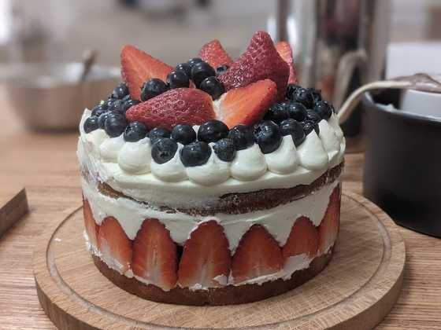
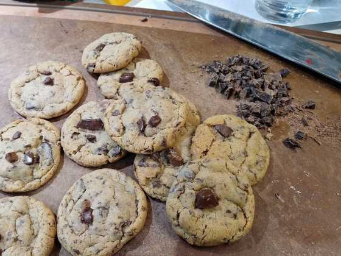
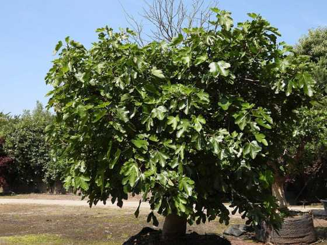
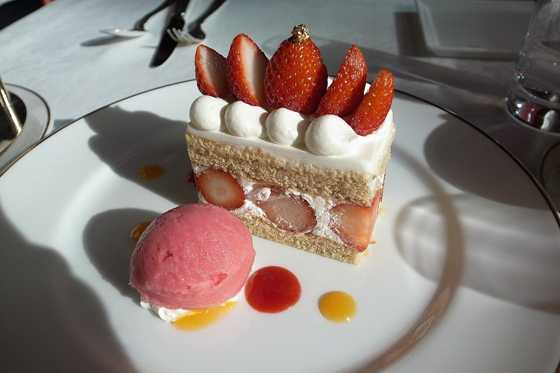
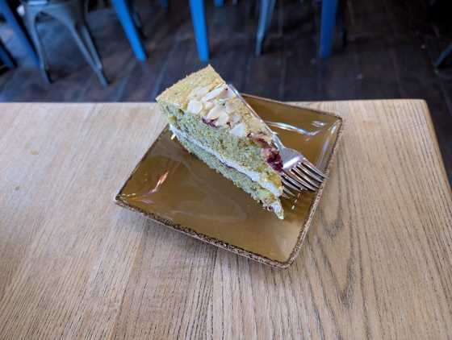

コンテナケーキ
紹介記事では1個500円季節のフルーツを使った、ワンコインのケーキ。紹介記事では、ブルーベリー、ベイクドチーズ、季節のいちじくなどが挙げられています。
掲載の写真はフリー素材のイメージで、店舗の実際の様子・商品ではありません(国外撮影・撮影地不明のものを含みます)。
石川県能美市緑が丘 / SWEETS SHOP
グレーのコンテナハウスの、小さなスイーツ工房。コンテナにちなんだワンコインのケーキと、思い出をのせるフォトクッキー。
コンテナケーキ ― 紹介記事では1個500円
MENU
季節のフルーツを使った、ワンコインのケーキ。紹介記事では、ブルーベリー、ベイクドチーズ、季節のいちじくなどが挙げられています。

石川県産の米粉を使った、カップ入りのシフォンと、マドレーヌ生地のドーナツ(紹介記事より)。

写真やイラストをレーザーでクッキーに印字。好きな写真でのオリジナルケーキも注文できるとされています(紹介記事より)。




価格・品揃えは変わることがあります。最新の内容は店舗のInstagramでご確認ください。ここに載せていない詳細メニューは準備中です。
VOICE
仕事帰りに寄って、500円のケーキをひとつ。箱に入れてもらうと、ちょっとしたお土産気分になります。
― 30代・会社員(創作)
子どもの写真をクッキーにしてもらいました。おばあちゃんへのプレゼントに大喜びでした。
― 40代・主婦(創作)
グレーのコンテナが目印で、すぐ分かりました。季節のフルーツのケーキを楽しみにしています。
― 20代・学生(創作)
上の3件は制作側が作成したイメージ例で、実在のお客様の声ではありません。
ABOUT
GLUTTON COMPANYは、2025年9月13日、能美市緑が丘に開店したスイーツ専門店です。オーナーの笹川さんは、東京のカフェや洋菓子店で経験を積み、生まれ育った緑が丘で店を開きました。
店舗は、40フィートと20フィートのコンテナを鉄骨でつないだ造り。「生まれ育った地を出発点に、気持ちのこもったギフトを提供していく」という考えが紹介されています。お客様とスタッフがいっしょにユニークな創作を楽しめる場にしたい、という思いも語られています。
ケーキ、ドーナツ、焼き菓子。コンテナの形を借りたケーキと、手のひらサイズのギフト。このページのコンセプトは、そんなお店の姿から制作側が考えたものです。
情報源: 週末、金沢。 / コンテナハウス施工事例(2040.jp) / 個人ブログ / Instagram
店名の意味は確認できていないため、記載していません。





ACCESS
営業時間などは変更される場合があります。最新情報はInstagramをご確認ください。
写真はフリー素材のイメージです。実際の店舗・商品の写真ではなく、国外または撮影地不明のものです。縮小のみ加工しています。ライセンス詳細は creativecommons.org を参照。